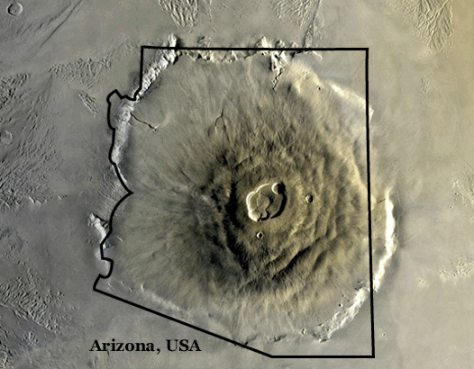

https://solarsystem.nasa.gov/
The largest of the volcanoes in the Tharsis Montes region, as well as all known volcanoes in the solar system, is Olympus Mons. Olympus Mons is about two and a half times Mount Everest's height above sea level. It is one of the largest volcanoes, the tallest planetary mountain, and the second tallest mountain currently discovered in the Solar System, comparable to Rheasilvia on Vesta. It is often cited as the largest volcano in the Solar System.